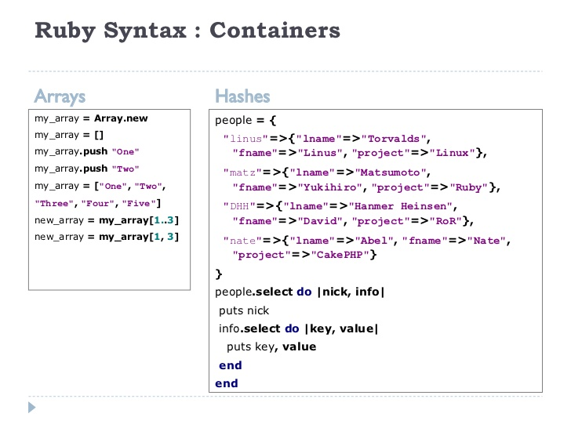

DBC week 4: Technical blog
Arrays and Hashes
Established on Jan. 3, 2016
This week we are going to talk about Arrays and Hashes. They are both very important. Ruby would not be the same if it lives without their existence.
So, yes, they are use for storing and retrieving data. But what exactly are they? Lets start with Arrays. You can think of an array as a integer-indexed comma-seperated list which it stores data within a squared bracket. Array starts counting from 0 instead of 1. Please see the example below which showing an array storing in a variable called "weekday".
weekday = [ "Monday", "Tuesday", "Wednesday", "Thursday", "Friday" ]
To retrieve "Monday" you need to call week[0] instead of week[1].
For hash, you can think of it as a collection of key-value pairs of information which it stores data within a curly bracket. However, the key are all unique but not neccessarily for the values. It is not an integer ordered list but a set of key-value pairs seperated by comma. In both arrays and hashes, if you try to access a key or index that doesn't exist, you will get nil by default.
weekday_hash = { "Monday" => 1, "Tuesday" => 2, "Wednesday" => 3, "Thursday" => 4, "Friday" => 5 }
In this case, "Monday" becomes the first key of the weekday_hash. To retrieve the value 1, you need to call weekday_hash["Monday"].
Below are some example syntaxs of arrays and hashes
